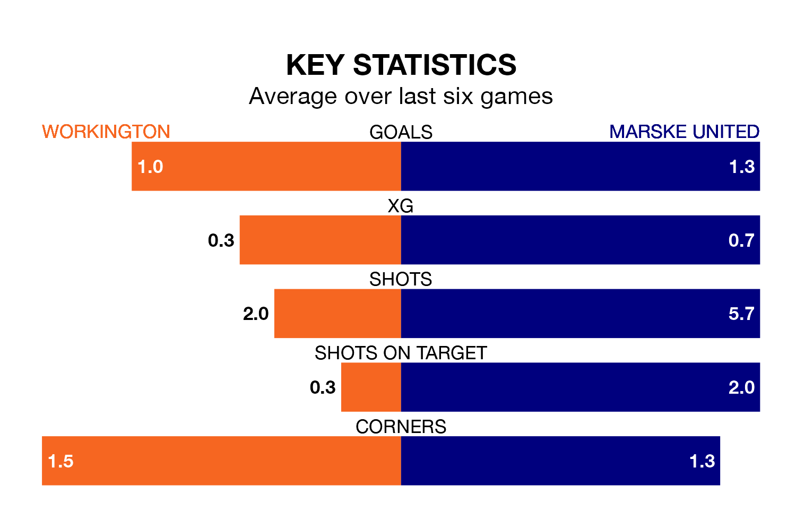

Workington host Marske United on Saturday at Borough Park in the Northern Premier League.
In their last league match, on March 9, Workington lost to Hyde United 1-0 at home.
Marske also lost, 2-0 at home against Morpeth Town on December 30.
Marske are 20th in the table after 22 games, of which they have won seven and lost 15, earning 21 points.
Workington are five places ahead of United in 15th, with 10 wins and 11 draws putting them on 41 points.
With 30 goals in 22 games so far this season, the visitors are the league's joint-third-lowest scorers with 1.4 goals per game. And they are conceding more than average, letting in 53 goals at a rate of 2.4 per game.
The home side, meanwhile, are above average scorers, with 1.8 goals per game, compared to a league average of 1.6. They have conceded 2.0 goals per game.
Workington are in mixed form in the Northern Premier League, with two wins and a draw from their last six games.
With three wins and three losses over that period, Marske's form is slightly better – they have taken nine points from 18, compared to Workington's seven.
Updated: 15:10 (UTC), 15/03/24